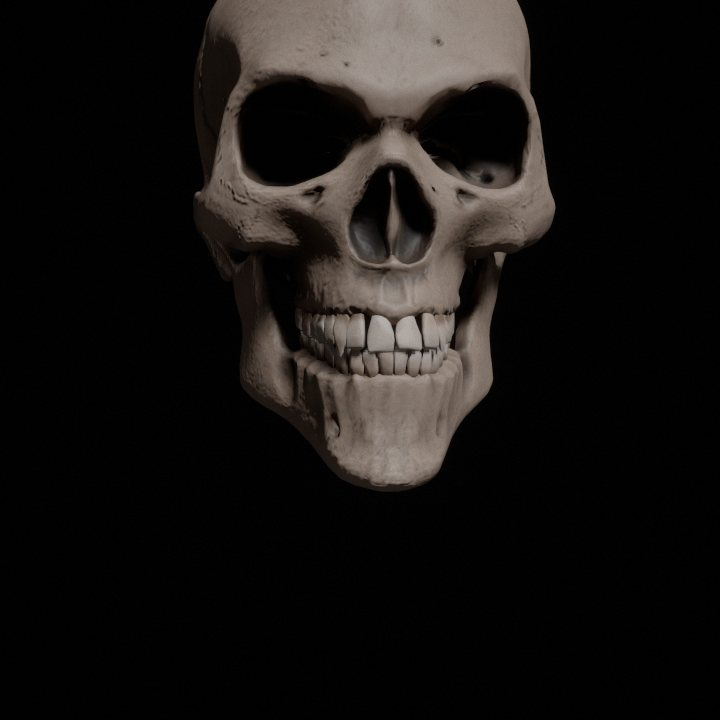
Evil
The default head: the scan with a lowered brow, hollow temples and long canines.
A skull under a thin veil turns as you turn, leans in as you lean in and opens its jaw when you open yours; frown, and its empty sockets fill with light that shines through the cloth. Here is how it is lit and shaded, bone in a dark studio, light inside the sockets, sheer cloth that filters what is behind it, casts a partial shadow and tears; then how it moves, from a face read by a camera at its own pace to 4,096 particles of cloth hanging on the head and blowing away; and what it sounds like.
See it live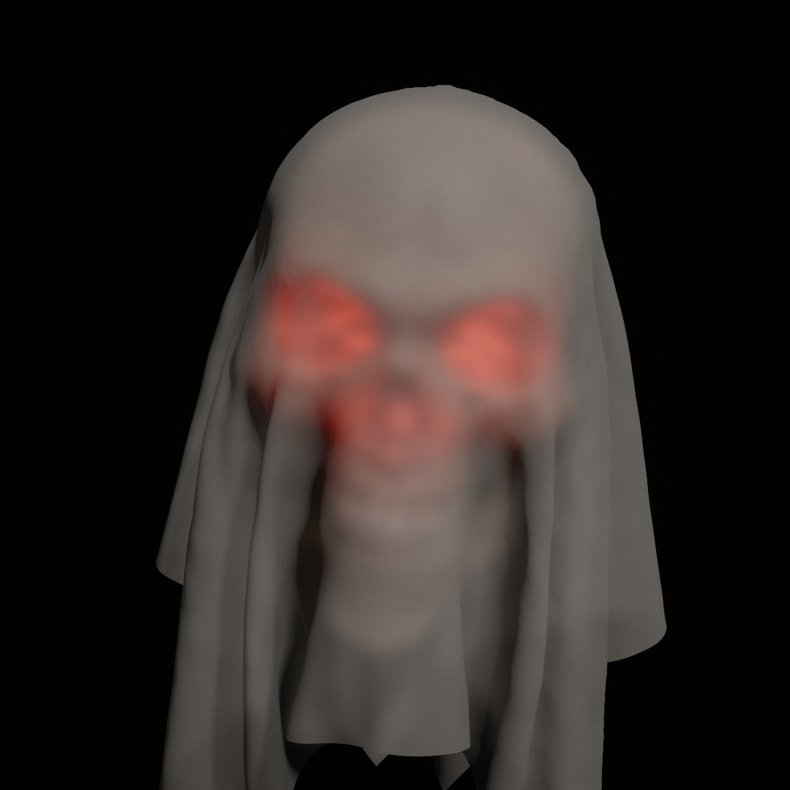
The prompt was Veil. The piece is a mirror that answers with a skull: the webcam watches your head, and a life-size skull in a dark room copies it, under a square of thin cloth that rests on its crown and hangs over its face. The cloth is simulated, so every turn of the head swings it, every gust lifts it, and it settles back by itself. Without a camera the skull follows the mouse or a finger instead, and when nobody is there it looks about on its own.
Everything is in real units. The skulls are modelled in metres, resting on y = 0 and facing +z; MediaPipe gives the head's pose in centimetres with the webcam at the origin; the world is in decimetres. The skull is scaled by 100 into centimetres and offset by (0, −8.9, −4.1) cm so that its sockets sit on MediaPipe's canonical eyes, and the head group is then scaled by 0.1 into the world. The cloth is simulated in the skull's own space, in metres. The view's camera sits about a metre away.
There are three heads, picked in the panel: Evil (the default), Realistic and Suzanne. The realistic one is a scanned human skull with its 1024-pixel colour and normal maps; the evil one is the same scan with a lowered brow, wider cheekbones, hollow temples, a longer chin and pointed canines; Suzanne is Blender's monkey, scaled so her eyes sit where the sockets are. Each glTF carries a two-bone skin: CraniumBone, and JawBone on the jaw joint, carrying the mandible and lower teeth (Suzanne's moves nothing). The first one loads behind the loading pill, the others in the background once the first frame is up.
The skin is not used as a skin. On load, each vertex's weight for joint 1 is summed into a jawWeight attribute, the skin attributes are deleted, and the mesh is drawn with one PipelineMaterial whose displace() moves the vertex by the jaw's matrix in proportion to that weight, normal included. Because displace() runs in every variant of the pipeline's shaders, the jaw moves in the shadow map, the prepass (so ambient occlusion, GI and velocity see it) and the main pass alike. The jaw's matrix turns about the joint's rest position, rotateY(0.2·side) · rotateX(open), after a slide of (8 mm·side, 0, 6 mm·forward); the cloth's simulation is handed the same matrix for its jaw field.
In surface() the bone's colour map multiplies the albedo, and its normal map perturbs the normal through a tangent frame built from screen-space derivatives of the position and the uv (the meshes carry no tangents; glTF's green channel is flipped to match the frame). Roughness is 0.62 for the evil skull, 0.6 for the realistic one and 0.7 for Suzanne, metalness 0.

The default head: the scan with a lowered brow, hollow temples and long canines.
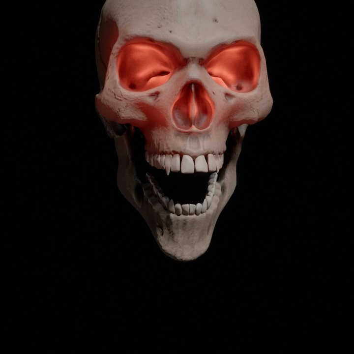
displace() swings the mandible and lower teeth on their skin weight; shadows and AO follow.
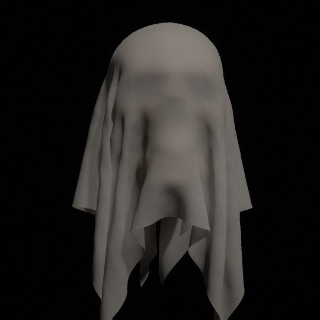
The plain scan under a bone-white veil.
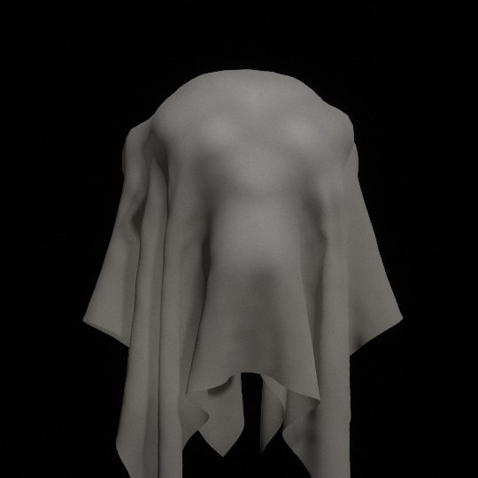
Blender's monkey, with her eyes; the veil sits closer, 8 mm off.
The light is a photographer's studio, built procedurally and baked once at load: a seamless cyc (floor sweeping up into a back wall) with a floor albedo of 0.08 and walls of 0.06, so the room barely shows; a softbox key 20° across (keySize = 0.35 rad, aspect 0.8) from (0.5, 1, 1), which puts it 42° above the head and 27° to the right of the view, at intensity 7; and a fill panel on the other side, 8° up and 17° to the left, 1.6 times as wide and only 0.12 bright. The room is rendered into a cube map and prefiltered (PMREM) for reflections, and rendered again without the key into nine spherical-harmonic coefficients for diffuse light. The key's diffuse share comes instead from a directional light along its axis, so it can be shadowed: its colour is the panel's power over the square of its distance. The background is a flat #060607.
The shadow pretends the key is smaller than the panel: 7° across (shadowLightSize = tan 3.5°) rather than the 32° the softbox would give. The reflections keep the big soft panel; the shadows are tighter, so the shadow of cloth a few centimetres off the bone survives (see the veil's shadow, below). Shadows are PCSS soft shadows, filtered over at least 3.5 texels and denoised in screen space.
The bone is a plain dielectric: albedo from its colour map, no metal, specular F0 of 0.04, roughness 0.62 (evil), 0.6 (realistic) or 0.7 (Suzanne), and the normal map bent onto the surface through the derivative tangent frame. Each pixel adds up:
The ambient light is the studio's spherical harmonics in the normal's direction, darkened by ground-truth ambient occlusion (traced at half resolution, accumulated over frames and blurred) and lifted by one bounce of screen-space indirect light, so the sockets, the gap under the cheekbones and the inside of the jaw go dark while the cheek facing the lit brow picks up a little of its colour. The specular half reads the prefiltered environment at the roughness's mip, with a multiple-scattering term so rough bone doesn't lose energy, and is dimmed where AO says the surface can't see out. Under the veil, two more factors come from the cloth (see the veil's shadow): the soft light is cut through occlusion, and the albedo is tinted by the cloth's hue.
When the face is lost and the head drifts off, the key's colour and the environment's intensity are both scaled by smoothstep(0, 0.5, presence), so by the time it has gone halfway it has gone dark; the embers fade with it. The frame then goes through bloom (0.06, radius 0.7), exposure 1.1 and AgX, a vignette of 0.32 and grain of 0.03: the glow of the sockets is the only thing hot enough to bloom.
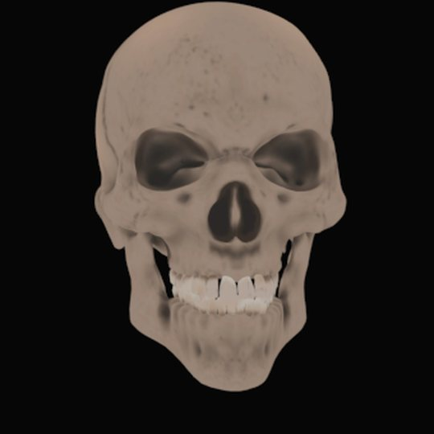
The colour map alone.
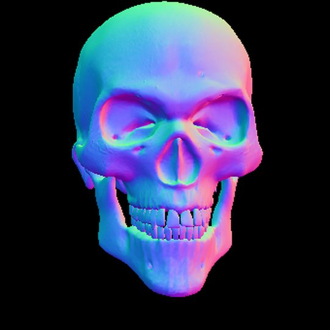
With the normal map, in world space.
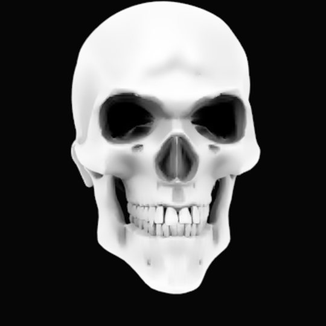
Half-res GTAO: sockets, nose and teeth go dark.
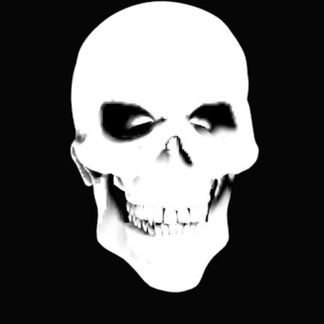
The denoised shadow mask, no veil.
Everything together, then AgX.
The glow has no visible source. Four point lights sit inside the head: one deep in each socket, at (±32, 115, 54) mm in the skull's space, and a weaker pair (weight 0.3) in either half of the nasal cavity, behind its opening at (±6, 85, 76) mm. They are evaluated in the bone's own shader rather than as scene lights, because they must behave like light trapped in a cavity: inside a socket (within about one socket radius, 20 mm, of the light, faded between 0.7 and 1.3 radii) a surface is lit directly from the light; outside it, the light only leaves through the cavity's mouth, a forward-facing disc 16 mm in front of the light along the socket's axis (±0.25, −0.12, 1) (10 mm along (0, −0.3, 1) for the nose), so only what is in front of the opening is lit, and the brow and cheekbones catch it.
The through-bone term (0.25 for the skulls) adds a glow that falls off over about a centimetre around each light, so the thin bone of the socket floors and the nasal septum seem to glow from inside. The light's radiance scales with the ember's area in world units, so its irradiance is right whatever the scale. The same irradiance, two-sided, is added to the veil's shader, scaled by the cloth's translucency (0.6) and opacity, so the light inside the head shows on the cloth over the sockets.
The Eyes select picks the colour: Hellfire (1, 0.03, 0.008) at strength 1, Pale (0.86, 0.93, 1) at 1.1 and Sick (0.4, 1, 0.1) at 0.9, balanced to read about as strongly through the veil. Glow (0 to 3) scales it, and the presence's light factor dims it with the head. Suzanne has eyes, so her sockets are not empty: her eyeball vertices are marked in the vertex colour, which becomes an eyeball attribute, and they glow themselves at 1.5 × the radiance, while her socket lights drop to weight 0.12 (a little light spilling round the eyes), her sockets are 1.8 times bigger, her through-bone glow is 0.04, and she has no nose lights at all.
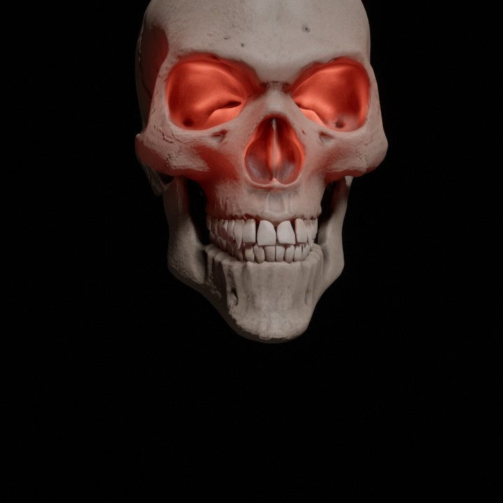
No source shows: the socket walls, the brow's underside and the nasal cavity are lit from inside, and the thin socket floors glow through.
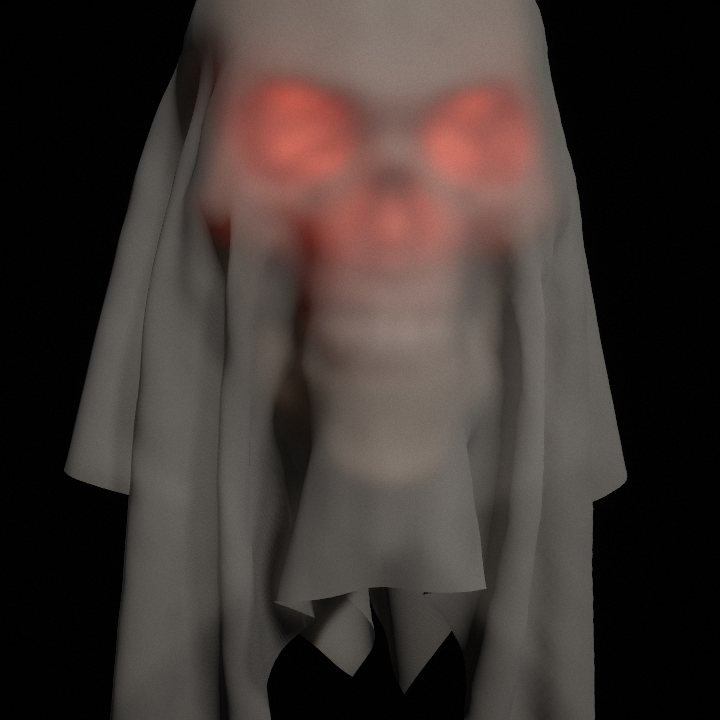
The same light reaches the inside of the cloth and blooms through it.
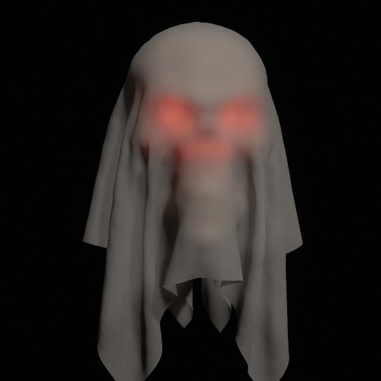
(1, 0.03, 0.008) at strength 1.
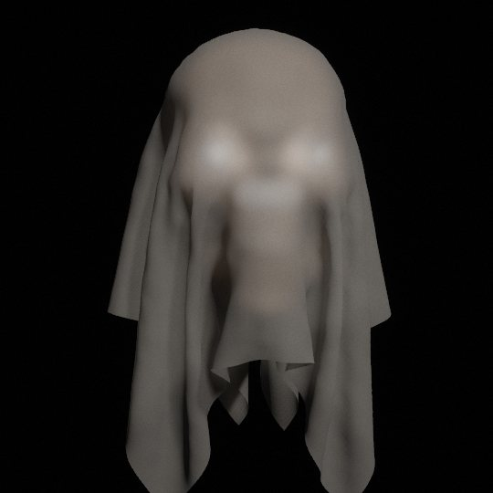
(0.86, 0.93, 1) at 1.1.
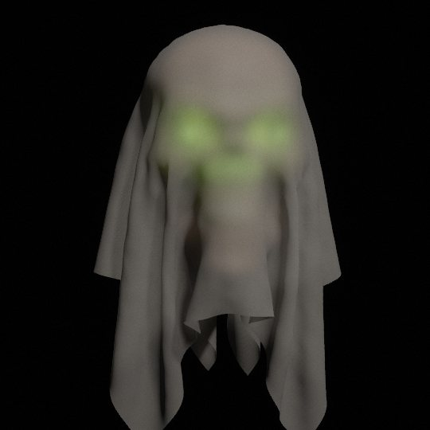
(0.4, 1, 0.1) at 0.9.
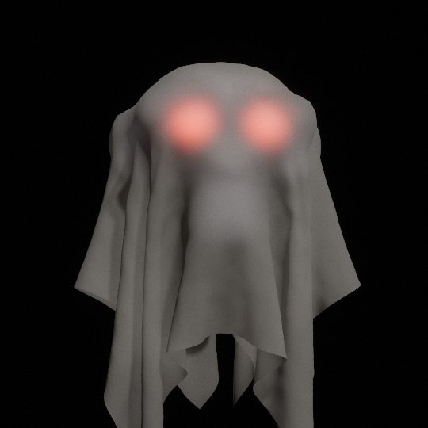
Her eyeballs glow themselves, 1.5 times the radiance.
The scene goes through the shared photographic pipeline: soft shadows, half-resolution ambient occlusion and one bounce of GI, a multisampled main pass, bloom (0.06, radius 0.7), AgX at an exposure of 1.1, a 0.32 vignette and 0.03 grain, on a near-black #060607. The studio is the dark room with one light described above.
The veil is one surface drawn twice. The far side, the cloth hanging behind the skull, is a back-faced mesh in the skull's group, drawn in the main pass with depth writes off; it is also the mesh that casts the veil's shadow. The near side, the cloth between you and the bone, needs what is behind it, diffused, which a forward pass cannot give it, so it is drawn in the pipeline's composite hook, after the lit image exists:
Because the layer is filled with the scene's depth first, the bone hides the cloth wherever it is in front of it, and because the layer is multisampled like the main pass, that edge is antialiased the same way. Only depth is written into it, not colour. The blur is two rounds, the second twice as wide, since a single wide round would show its taps; with the default diffusion of 0.2 a tap is 0.46 quarter-resolution texels apart in the first round. What the near side's material does with that copy is below.
The opacity op at each point is the Veil opacity slider (0.05 to 0.5) raised toward 1 by half the dirt and cut by up to 85% where the cloth is worn thin; Veil diffusion (0 to 0.5) sets the blur. The cloth's colour, opacity and diffusion follow the panel live. The near side's program is compiled with the others before the first frame, in its own throwaway scene.
Sheer cloth is two things at once: a surface that catches light, and a filter for what is behind it. The opacity op splits each pixel between them. The cloth part is a rough, matte fabric: albedo the veil's colour times the dirt map, roughness 0.9, no specular reflection at all (woven fibres scatter it into the diffuse), and a sheen of 0.4 at roughness 0.85, the soft velvet-like rim that fabric gets at grazing angles (Charlie distribution, Neubelt visibility). The albedo, the sheen and the transmission are all scaled by op, so a sheer veil catches little light of its own. The other part, 1 − op, is the blurred room behind, tinted by the cloth's colour, and added as emission so the lighting doesn't touch it again:
Seen through, the room is tinted 60% of the way to the cloth's colour, all the way where the cloth is dirty: a crimson veil turns the bone behind it crimson, while its own lit surface stays dark if the cloth is dark. Light passing the other way does the same, which is why the bone's albedo is tinted by the cloth's hue in its own shader.
Transmission is the pipeline's thin sheet: a sheet lets light through from its back side. The key lights it from behind only where it is geometrically behind the sheet, shadowed from that side; the environment comes through from the far side, scaled by how open that side is, here 0.25, since most of what the cloth sees behind it is skull. So the hanging edges glow faintly when the light is behind them, and the cloth over the face stays dark where the head hides the room. The embers light the cloth from inside: their irradiance at each point, through a translucency of 0.6, lights the cloth in their own colour, so the red of the sockets blooms on the inside of the veil before it shows through.
The far side, behind the skull, is the same surface drawn as back faces in the main pass, with the same dirt, opacity, shadow and ember terms; it doesn't need the blurred copy, since what is behind it is only the dark room, so its 1 − op is plain alpha blending. Its alpha is coverage · op in colour, and the chance of blocking in the shadow pass.
The formula above, per channel, with stand-in light: a key irradiance of 2 on the cloth, the room's 0.15 from behind, bone behind lit to about 0.5, the dark room behind at 0.003, and the eyes' light at full strength 6. Swatches go through exposure 1.1 and a simple filmic curve; bars are in linear light. Dirt here is a uniform brown.
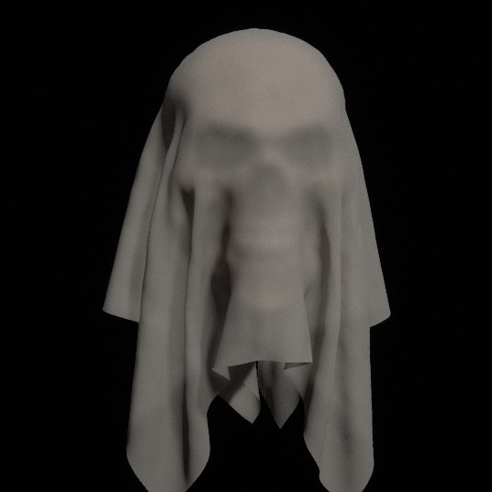
The blur at its narrowest: the skull reads sharply through the cloth.
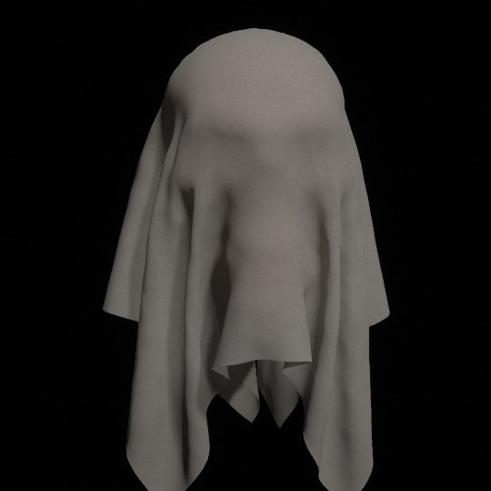
The widest: features melt into light and dark.
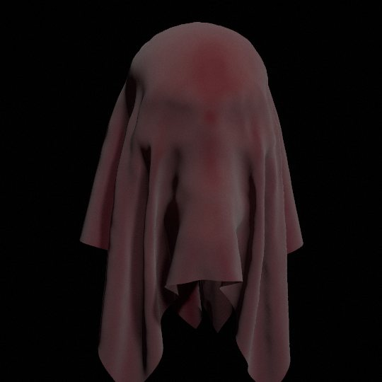
Dense: the cloth's own lit surface dominates, and the bone shows only as shape.
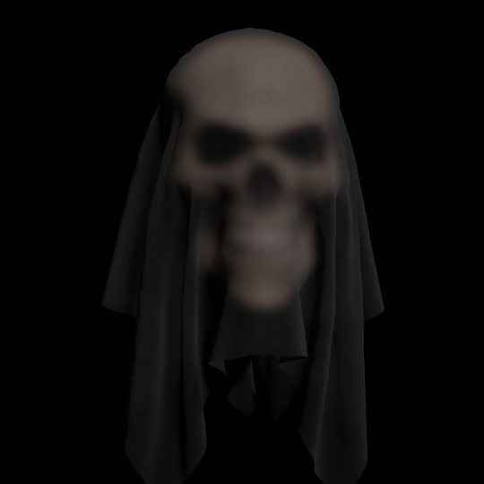
Sheer and dark: the skull comes through tinted, the cloth barely lit.
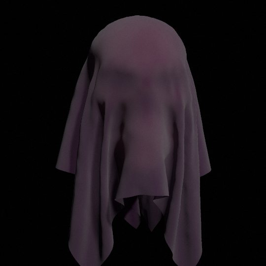
Mid opacity, high diffusion: the face is a soft shape.
A pale grey, in between.
A shadow map stores one depth per texel: something blocks the light, or it does not. Sheer cloth blocks some of it. The far side's material uses the pipeline's stochastic shadows: in the shadow pass its alpha is the chance that a texel blocks the key, and each texel compares it with a fresh interleaved-gradient noise value every frame (cycling over 64 frames) and is drawn or discarded. One frame's shadow is a speckle; the pipeline's shadow filter averages it over its disc and the shadow denoiser over time, and the result converges to a partial shadow of exactly that strength, which multiplies through where the cloth is folded over itself.
The chance is the share of the light the cloth stops, veilBlocked(op) = mix(0.15 + 0.3·diffusion, 1, op), times its coverage. Any cloth stops some light: its threads cover part of the beam, at least 15%, and the more it scatters, the more of the beam it turns away; what it hides on top of that, its opacity, it stops too. Dirt and wear reach it through op. So there is never no shadow while there is cloth, and a dirty, diffusing veil throws a deep one.
Left, veilBlocked against the cloth's effective opacity; the dot is the cloth the sliders make. Right, a patch of shadow-map texels: this frame's draw from the same interleaved-gradient noise, the same averaged over a 3.5-texel disc (the pipeline's smallest filter for this day), and that averaged over the last 16 frames, standing in for the denoiser.
A noisy blocker needs a wide filter, so the day sets the pipeline's shadowMinTexels to 3.5: no shadow lookup averages over a smaller disc. And a filter that is too wide loses the veil altogether, because the cloth rides only a few centimetres off the bone: a penumbra much wider than that gap smears its shadow into nothing on surfaces tilted toward the light. So the key is made small, about 7° across (shadowLightSize = tan 3.5°), instead of the studio's wide softbox; its shadow of cloth a few centimetres off the bone survives on the cheekbones and the brow.
The cloth's own shadow needs no blocker search: it is soft and thin, so both of its sides use a fixed 32-tap Vogel disc of 9 texels, offset toward the light from whichever side faces it, by the normal bias plus 1.5 to 4.5 texels depending on the angle, faded out near the edges of the map and at grazing light. It takes many taps because the shadow it reads is the stochastic one.
The cloth also takes light away from the bone that a shadow map cannot: the soft studio light around it. The bone's material multiplies its occlusion by 1 − veilBlock·(1 − 0.35·down), where veilBlock is the same share as above for the panel's opacity and diffusion, times the veil's fade and 0.8 for a tattered veil (its holes let some through), and down is how much the surface faces downward, since the hem is open underneath. And light that came through the cloth took its colour: the bone's albedo is multiplied by a filter lerped from white toward the cloth's hue (normalised to a maximum channel of 1, since brightness is the shadow's job) by min(1, 0.9·veilBlock). The embers' light is inside the cloth, so it is added after the filter and keeps its colour.
The key's shadow on bare bone.
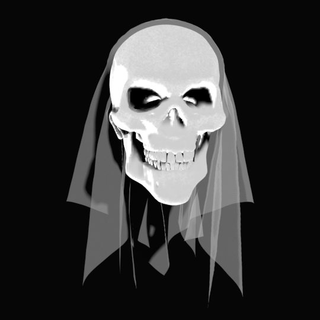
The cloth's partial shadow over the whole head, deeper where it folds.
A tattered veil (Tattered, and Tatters 0–15 for which set) is cut at two scales. The simulation cuts its grid: each of the four edges gets a run of triangular notches, 3 to 6.5 cells wide and up to 5 cells deep, laid end to end; along the front they reach 6 cells, and toward its middle, over the mouth, up to 11 cells and half as wide, so the cloth there hangs in narrow shreds rather than leaving a window. A cell of the 63 × 63 is kept if any of nine points in it is inside the outline, and only cells joined to the centre through their sides are kept, so no scrap floats loose. The links and the drawn triangles follow the cells.
The look is cut much finer, by two maps made in a worker of their own, 16 texels a cell (1008 × 1008), so they can be made while the old veil is still blowing away. Each seed's maps are kept once made. The outline map holds, in green, the signed distance to the edge of the cloth in texels, and in red how worn thin it is; the dirt map holds what the cloth's colour is multiplied by.
The noise that eats the holes hangs: it is value noise of the angle round the crown (wrapping, so the bumps meet at the back) and the distance down from it, longer than wide, so holes and rips run down the cloth the way a hanging fabric tears. Holes are more likely toward the hem, and a few big rips start further in. Then everything not joined to the crown through the cloth (a flood fill) is removed, and a two-pass chamfer distance measures how far outside the joined cloth every texel is, which gives the removed islands a proper outside distance.
Loose threads hang from edges that face down, away from the crown, up to 3.2 cells below them. Strands are spaced by angle round the crown, 520 of them, so each runs straight down; about half of them exist, with a hashed length that favours a few long strands over a row of stubs (a row of short ones reads as a jagged edge), a width of 0.35 to 0.6 of their spacing and never under about two texels. They are written into the distance field as thin strips, so the shader cuts them like any other edge, and a last 8-connected flood fill from the crown drops any thread that does not reach the cloth.
Wear: the cloth goes sheer, up to 45%, within 0.9 cells of every edge, and in fractal patches toward the hem, up to 80%; loose threads are whole thread, only 15%. Dirt starts from an aged off-white with blotches; water stains are dried pools (a smoothstep of low-frequency noise) with a darker tide line round each, a Gaussian 0.025 wide at the pool's edge; grime, a grey-brown, gathers toward the hem (within 16 cells), round the edges, in blotches and in streaks down the folds; and mildew is sparse dark specks where it is grimy. The dirt also raises the opacity (by half its amount) and takes the cloth's tint over what is behind.
The same functions as tatter.js at 12 texels a cell instead of 16. Left, the whole cloth, crown at the top, the front hem (over the face) at the bottom; click it to move the magnifier. Right, the cut at that spot, from the 8-bit distance as the shader decodes it, one pixel wide at any zoom; untick the cut to see a plain d > 0 test. The cloth view shows bone-white cloth at an opacity of 0.45 over black.
The distance is stored over ±4 texels around the edge in 8 bits, and the shader cuts it over exactly one pixel: coverage = clamp(0.5 + d / fwidth(d), 0, 1), with d = (g − 0.5)·8. Up close, the edge is a smooth line, not a staircase of texels. Far away, threads are finer than a pixel, so the outline map is mipmapped (trilinear, 8× anisotropic) and its averaged distance gives coverage per pixel, and a fringe of threads thins into a soft fuzz. The coverage is the alpha on both sides, and in the shadow pass it multiplies the chance of blocking, so a hole lets light through onto the bone.
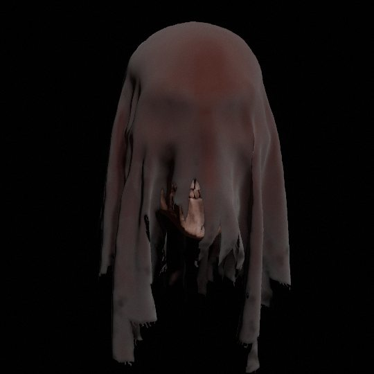
Rips run down from the hem; one opens over the teeth.
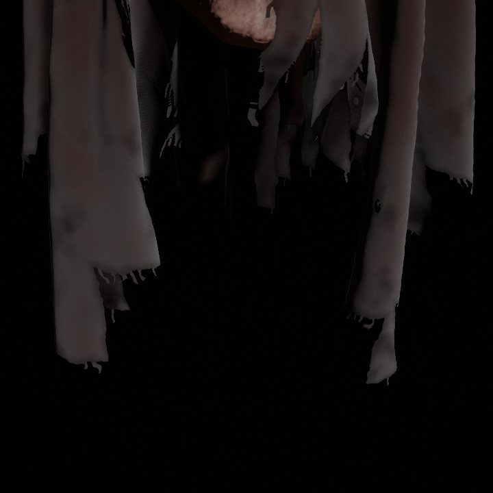
Strips, notches and the loose threads hanging from edges that face down.
When the first frame is up, a card asks how to play: Use my camera (the skull follows your face; the card says the video never leaves the device) or Use the mouse (Use touch on a coarse pointer). It does not appear under ?capture or when a take is being replayed. Behind it the skull already moves by itself, and clicks, wheel and pointer events on the card are stopped so they never reach the scene.
Choosing the camera starts it at once and the card turns into a waiting screen, refreshed every 200 ms from the tracker's status: Waiting for the camera… with a pointer to the browser's prompt, or Starting the camera… when the Permissions API says the camera is already granted, then Loading the face tracker… while the model downloads. A Use the mouse instead link is there all along, since a permission prompt can be left unanswered. If the camera ends up denied or unsupported, the mode falls back to the mouse and the card says why. Either way it ends on a short list of that mode's instructions and a Start button, and hides by itself after 15 s.
C, or the camera button next to randomize, brings the card back. The button's icon shows whether the camera is on. In mouse mode the mouse turns the head, so the orbit controls lose their rotation (zoom stays); with the camera, dragging orbits the view. The view is a 30° camera framed so that 2.7 dm above and below the target and 2.1 dm either side always fit, which puts it about 1 m away on a landscape screen (further on a portrait one); zoom goes from 3 to 16 dm, with no panning.
The camera is opened with getUserMedia, facing the user, asking for 640 × 480, and then for the highest frame rate its track reports in its capabilities if that is more than it picked. The video is muted and inline and is never shown. Each new frame is noticed with requestVideoFrameCallback, which also gives the moment it was captured (captureTime, else its expected display time); without that callback the tracker watches video.currentTime once per rendered frame instead.
Detection is MediaPipe Tasks Vision 1.1.0 and its float16 Face Landmarker model, both from their CDNs, in VIDEO mode, one face, with the facial transformation matrix and the 52 blendshapes. It runs in a classic worker (MediaPipe loads its wasm with importScripts), which downloads the model itself and creates the landmarker on the CPU delegate. Once a frame, if a new camera frame exists and the worker is idle, the page grabs the video as an ImageBitmap and transfers it along with its capture time; the worker detects, closes the bitmap and sends back the matrix and the blendshape scores with that same time. Only one frame is ever in flight, so a slow detection drops frames instead of queuing them. If the worker cannot start, the landmarker is created on the main thread instead, on the GPU delegate, falling back to the CPU (?tracker=main asks for this).
The panel's Tracking line counts over each second: camera frames against the camera's maximum, the mean detection time, where it ran, and the page's frame rate, e.g. cam 30/30 · 14 ms worker · 120 fps. Camera reads asking for the camera…, loading the face tracker…, following your face, looking for a face…, no permission, unavailable, off (mouse) or off (capture).
A detected pose jitters by a few millimetres and a fraction of a degree from frame to frame, which a skull a metre away magnifies into a visible tremor. A plain low-pass filter that removes the tremor also makes every real turn lag. The position therefore goes through a One Euro filter (Casiez et al. 2012): a low-pass whose cutoff rises with the speed of the signal. Each axis keeps its value and a speed, the speed itself low-passed at 1 Hz, and the cutoff is minCutoff + β·|speed|, with minCutoff = 0.5 Hz and β = 0.5. Held still, the head is filtered at half a hertz; moving at 30 cm/s, at 15.5 Hz.
Detections arrive every 30 to 46 ms with Gaussian noise. While the head is still the cutoff sits near the minimum and the output is calm; during the fast 14 cm move it jumps to tens of hertz and the output keeps up. Set β to 0 to see a plain low-pass: smooth, and late.
The rotation is filtered the same way in spirit: its angular speed is low-passed at 1 Hz and the shown rotation slerps toward each detected one by a factor whose cutoff is 0.5 + 5·ω Hz. All the dts come from when the frames were captured, not from when their detections came back, which varies with the load on the worker. The filters reset whenever the face is lost.
Then the pose is mirrored, because a webcam is used like a mirror: turning your head to your left should turn the skull to the left of the screen. Flipping x in the world alone would leave a reflection, which is not a rotation and would turn the skull inside out. So the matrix is mirrored on both sides, S·M·S with S = scale(−1, 1, 1): in the world and in the head's own space. The skull is symmetric, so mirroring its own space changes nothing about how it looks, and the result is a proper rotation again. A rear-facing camera (facingMode: "environment") is not mirrored.
A webcam gives 20 to 30 frames a second and the page draws up to 120, so showing each detection as it arrives would make the skull jump to a new pose every four or five frames, by an uneven amount, at uneven times. Instead the tracker keeps the last eight filtered detections, each stamped with its frame's capture time, and the skull is shown where a smooth curve through them was a little while ago.
The curve is a uniform Catmull-Rom spline through the positions, and through the four components of the quaternions (each made to lie in the same hemisphere as the one before, so the blend takes the short way round), renormalised. It is sampled at now − delay. The delay eases, at min(1, 2·dt) a frame, toward the detection latency plus 1.3 frame intervals, both measured as running averages (20% a detection) of the capture-to-result time, capped at 200 ms, and of the gap between captures, capped at 150 ms. That is just enough to have a detection on either side of the sampled moment nearly always; typically 80 to 120 ms behind real time.
The same machinery as tracker.js run at 120 frames a second: frames captured with ±25% jitter, each detection back after its own latency. Jump shows the newest detection, as ?pose=jump does on the page. Playback is smooth and follows the true motion shifted by the delay (dashed). Missed frames are bridged by the curve and then by a short extrapolation.
Past the newest sample the curve carries on in a straight line at the speed of the last two samples (lerp and slerp past 1), for at most 1.5 frame intervals, and then holds. Before the oldest it holds too. Fast moves blur a frame or two and the landmarker misses the face; a miss less than 350 ms after the last good detection is ignored, so the skull plays on through it. A longer one counts as the face being lost: the filters and the samples are cleared, and the next detection starts the curve afresh.
The skull is placed as the webcam sees the face: in the same direction from the view's camera as the face is from the webcam, and as far from the orbit target as the face is from 50 cm. The face's position in centimetres is scaled by D / 50, where D is the view camera's distance to its target, carried into the world by the camera's matrix, and taken relative to the target. A face 50 cm straight in front of the webcam puts the skull exactly at its usual place; leaning 10 cm in brings it a fifth of the way to the lens and makes it bigger, and moving sideways moves it across the screen at the same angle. Because it goes through the camera's own matrix, this holds wherever the view is orbited to. The rotation is the face's, unchanged.
The expression comes from eight of the blendshapes. The jaw opens by 0.6 · jawOpen radians, at most 0.45 rad (26°). It swings sideways by clamp(2.5·(jawLeft − jawRight)) (flipped when mirrored), as 0.2 rad of turn and 8 mm of slide at full deflection, and slides forward up to 6 mm with jawForward. All three ease toward their targets at 1 − e−20·dt a frame, since blendshapes are not filtered. The frown is the larger of the mean of browDownLeft/Right and of mouthFrownLeft/Right; the panel plots it as Frown. The eyes' glow aims for smoothstep(t − 0.08, t + 0.08, frown), with the Frown threshold t (0.4 by default, 0.1–0.9), and eases there at 1 − e−8·dt, so the light comes up over a few tenths of a second and goes as you relax.
With the mouse or a finger, the head turns toward the pointer: a yaw of (x − 0.5)·1.2 rad and a pitch of (y − 0.45)·0.8 rad, from its position as a fraction of the window. It does not jump there. Yaw and pitch each follow a critically damped spring with k = 7 (acceleration k²·(target − θ) − 2k·θ′), so a fast flick of the mouse swings the head, and the cloth with it, and settles without overshoot. The head also rolls by −0.05·yaw′ as it turns, leaning into the turn, and moves 6 cm across and 3 cm up and down with the pointer. Pressing the button (or a finger) on the canvas opens the jaw to 0.8 · smoothstep(0, 0.25, held); held for 0.7 to 1.1 s the brows come down to a full scowl, which is a frown, and the eyes light up.
When no one is moving it, the skull moves by itself. Every 4 to 9 s it picks a new direction to look, up to ±0.55 rad of yaw, reached on its own critically damped spring (k = 9), and on top of that it wanders slowly: smooth value noise of time adds up to 0.15 rad of yaw, a pitch of 0.16·n − 0.04 rad, 0.1 rad of roll, and 0.8, 0.5 and 1.5 cm of drift, each channel at its own slow rate, 0.07 to 0.21 noise cells a second. It chatters in bursts (max(0, n − 0.35)·2.2 times a 17 rad/s clatter), gapes slowly now and then (max(0, n − 0.45)·2.4), shifts its jaw ±0.25 sideways, and scowls when another noise channel passes 0.05 to 0.35, which lights its eyes.
The two blend. The pointer's share of the pose eases toward 1 while the pointer has moved in the last 8 s (and the start card is not up), and toward 0 otherwise, at 1.5·dt a frame; the pose is a lerp and slerp between the idle pose and the pointer's, and every blendshape a lerp. So a mouse left alone for 8 s hands the head back to its own wandering over a second or two, and a nudge takes it back. Before anything is chosen, the skull is idle.
Left, the pointer jumps from a quarter to 85% across at 0.1 s; the bold line is the yaw on the spring, stepped at 60 fps as the page does, the dashed line the idle spring, the thin one the roll. Right, holding the button: the jaw shape, the scowl, and the glow it gives for the threshold.
A skull that froze when the face was lost would look broken, and one that snapped to an idle pose would look worse. So the head has a presence, from 1 (here) to 0 (gone), which falls over 2.2 s when the face is lost and rises over 2 s when it is back. With away = smootherstep(1 − presence), the head recedes 75 cm into the room, drifts up to 5 cm sideways and 3 cm up and down on sines of the presence, and tumbles about a point 5 cm behind its origin: 0.5 rad of pitch, 1.8 rad of yaw and 0.7 rad of roll at full absence, each with a 0.25 rad sway. The key light and the environment are scaled by smoothstep(0, 0.5, presence), so by the time it is gone it is lost in the dark.
When the presence reaches 0 with no face, the head switches to idle and comes back by itself in its idle pose; if the face turns up again on the way out it turns around and returns to the face. When a face is found while idle, the pose blends from wherever the head is to the face's over 1.2 s with a smootherstep (at once, if it was fully gone). Changing the skull uses the same path: the old one drifts off, is hidden at presence 0, and the new one comes back in its place, with a fresh veil.
The cloth follows the head out and back. While the head is receding, returning, or gliding to a newly found face, the cloth is carried along and feels only the turning, not the travel. It is let loose as the head leaves (loose = smootherstep(1 − presence / 0.75), which relaxes the limits that keep it over the face, see below), and on the way back, past a presence of 0.75, the leash is shortened by up to 70% on a sine, −0.7·sin(π·(p − 0.75)/0.25), which draws the veil back into place before the head arrives.
The face is lost at 0 (after the 350 ms grace); the head is gone at 2.2 s and comes back idle by 4.2 s. Right, from the side: the head's offset and its pitch (the yaw is given in the readout), dimmed as the light goes.
The veil is a 52 cm square of 64 × 64 particles, 8.25 mm apart, solved with position-based dynamics. It is laid flat 22.5 cm above the skull's base, centred 5 cm forward of the crown so that more of it hangs over the face. Each particle has a position and a previous position (Verlet integration); every step moves it by its velocity times 0.97, plus its acceleration times the step squared, and clamps the move to 12 mm, so a particle can never jump deep into the skull in one step. The step is 1/90 s, at most three steps per update; if the simulation falls further behind than that, it runs slow rather than catching up.
Then five passes over the constraints, each a pair of particles and a rest length, moved toward that length by their stiffness and shared between whichever of the two is free:
| Link | Apart | Stiffness | Job |
|---|---|---|---|
| Structural | 1 along a row or column | 1 | Keeps the cloth from stretching. |
| Shear | both diagonals of a cell | 1 | Keeps each cell square, so the weave does not skew. |
| Bend | 2 | 1 | Resists bending, so folds are round. |
| Far bend | 4, from every other particle | 0.4 | Keeps folds from collapsing flat into a pinch. |
Solving in grid order drags the cloth to one side and gathers the error into one big fold, so the list is shuffled once with a fixed generator (seed 12345) and solved in that order every pass. Links exist only where there is cloth: a pair is joined when a cell on either side of the line between them is there, shear links need their own cell, and bend links need every link along their span, so a tattered veil does not resist bending across a tear.
The cloth is pinned at the crown. Once a dropped veil has come down on the head (after 20 steps when it is dropped unseen, when its crown lands when it is dropped live), every particle within 15 mm of the crown along the flat cloth is fixed where it lies. From then on a tether keeps every particle no further from the pin's centre than 1.02 times its distance along the flat cloth, which stops the veil from stretching under gravity and gusts however long it hangs.
The cloth collides with signed distance fields of the head, baked offline on 3 mm grids: one for the cranium with the upper teeth and one for the jaw with the lower teeth, both in the skull's rest space. They are not the raw mesh distance. The bake closes every cavity that a ball of 2 cm radius cannot roll into, so the cloth sees the eye sockets, the nose and the gaps between the teeth as filled and drapes over them like real cloth rather than falling in. Each field is stored as 8-bit values between its minimum and maximum, about a megabyte for both, and sampled trilinearly with an analytic gradient; outside its grid it counts as a metre of free space. The jaw's field is sampled at the point taken into the jaw's rest space by the inverse of its current matrix, and its gradient turned back, so the cloth over the chin moves when the jaw opens; the head's distance is whichever field is nearer.
Every particle rides 6 mm off the bone (8 mm on Suzanne, whose sharp brow and ears would otherwise poke through between particles). Sampling the fields is the expensive part, so at the start of each step every particle within 45 mm of the head records the tangent plane under it, and the first four constraint passes only push particles out of those planes. The last pass samples the fields for real: a particle closer than its offset is pushed out along the gradient and loses 30% of its velocity along the surface (friction). Around the crown, where the pin holds the cloth, it cannot slide back when the head looks up, and would buckle into standing folds, so within 7 cm of the crown it is also pulled back down if it lifts further than 6 mm plus 15% of its distance from the crown.
Two neighbours can end up on either side of something thin, an ear or a brow, held apart by it however hard their link pulls. They give themselves away by being more than 2.5 spacings apart while the midpoint between them is within 4 cm of the bone; both are lifted off the surface by up to 3 mm a step, from that midpoint, until they slide over the top to the same side.
Folds stack instead of passing through each other: every other step, particles that are not within two of each other on the grid are kept at least one spacing (8.25 mm) apart. They are binned in a hash grid of that cell size over the cloth's bounds, with an empty cell all round so no lookup needs a bounds check, and each particle only looks at the 27 cells around its own.
A real veil on a real head that bows, looks up and turns sideways would sooner or later slide off. This one must stay over the face, so three limits keep it there, all of which can be let go (loose, from 0 to 1) when the head floats away or the veil is blown off:
loose widens the cone to anything.30 mm + 0.35·d of where it settled, d its distance from the crown: short on the head, long at the hem. Up to 9× longer when loose.The drape that the leash measures from is worked out when a veil is dropped: the flat cloth falls onto the upright head, in still air and with the mouth closed, for 120 steps (pinned after 20), and where every particle ends up is its rest position. A faint pull, 1.2% of the way back per step in the first constraint pass, draws a veil that a gust or a turn pushed aside back to that drape over a few seconds; it is off while the veil is loose.
The head's motion reaches the cloth as a matrix: each update the page sends inverse(now) · before of the skull's world matrix, which takes a point that stayed still in the world from the skull's space before to its space after. The cloth applies 60% of it to every free particle (and to its previous position, so the velocity carries over). A tracker glitch should not fling the veil, so if a point 10 cm in front of the face would move more than 5 cm in one update, the motion is ignored as a jump. Gravity is the world's down taken into the skull's space, inside its cone.
A draft of 5 m/s² (Draft, 0 to 12) blows the front of the cloth back onto the face, the same everywhere in front of it, so it presses the cloth onto the features without gathering it anywhere; it fades out between 5 cm in front of the crown and 3 cm behind it, so the back hangs free. Gusts blow in the room: every 4 to 12 s after the last one ends (the first comes within 3 to 8 s), a gust picks a horizontal direction at random (its depth component halved, a breath of up), a peak of 2.5 to 5.5 m/s², a rise of 0.7 to 1.5 s with a smoothstep and a fall of 1.8 to 3.3 s, and a flutter of 0.8 + 0.2·sin(7.3t)·sin(3.1t + 1) while it blows. Its direction goes into the skull's space like gravity's. Over the cloth it is patchy, 0.35 + 0.65 times a product of two sines of the particle's position drifting with time, and it mostly moves the part that hangs: the cloth within 5 cm of the crown is sheltered by the head, and it is fully exposed from 20 cm.
One column of 64 particles through the middle of the veil, run live with the same step, damping, speed cap, links, tether, leash, drape pull, offset, friction, crown lift limit, draft, patchy gust, gravity cone and drop sequence as veil-sim.js, against a stand-in skull drawn from its own distance field (face to the right). Pitch the head and the cloth is left behind, then pulled back; untick the cone and it pours off. In the slice the blow-away's sideways push is drawn along the face's axis.
A new veil is dropped live. The simulation first works out its drape unseen, as above, and then starts the cloth over, flat, 50 cm above the skull's base (above the top of the frame), tilted a little by a random slope of up to ±0.15 each way so no two drops fall alike. While it falls it is carried with the head (left behind, it would miss the crown), and its gravity is the skull's own down, so it comes down on the crown however the head is tilted. When the patch at the crown comes within 4 mm of its offset from the bone, or after 2 s of falling, it is pinned where it landed and the leash to the drape comes on: 7 times its length at first, tightening with a smoothstep over 1.6 s, while the pinned crown slides to where the drape has it at 3·dt a frame. The fall is timed in the simulation's own steps, so it plays the same however the page keeps up.
Letting go is the reverse: the pins are released and the tether, the leash and the drape are dropped, so nothing holds the cloth any more. The page then sets loose to 1 and blows: an acceleration up and to one side, normalize(±1, 0.9, −0.2…0.2) in the room, building to 16 m/s² over 0.9 s with a smoothstep. The veil slides off the head and away.
The simulation runs in a module worker with no dependencies (it loads the fields itself). Once a frame, the page sends it the time since the last message (capped at 0.1 s), the draft, how loose the veil is, the gust, gravity, the jaw's matrix and its inverse, and the head's motion since the last message (all the frames' motions composed); along with them it transfers two buffers, which come back filled with the surface to draw. There is never more than one message in flight: while the worker is busy the page keeps adding up time and motion. Each drop bumps a generation number, and a surface from an earlier generation is thrown away, so a veil that has been replaced never shows for a frame.
The surface is smoother than the particles: a uniform cubic B-spline through them, sampled at every particle and halfway between, 127 × 127 vertices, with normals from the cross product of its tangents. The spline stops at the edges of the cloth and at its tears by repeating the last particle. Particles keep off the bone, but the surface between two of them can still cut through a sharp ridge and show bone in front of the veil, so every vertex is pushed out of the fields to the offset, in up to two steps, since around a thin part the way out bends.
Surfaces come back every few frames (the page measures the gap, a running average capped at 100 ms), so the page draws between the last two: each frame, the shown surface is the previous one blended toward the latest by how far into the measured gap it is. The cloth moves every frame, one surface behind. Then the cloth on the jaw is moved with it: a surface comes back shaped around where the jaw was when it was sent, so each vertex within 4 cm of the jaw field is carried by the jaw's motion since then, fully within 12 mm and with a smoothstep beyond. Which vertices those are, and their weights, is worked out once per surface, so a frame only moves the few near the jaw.
R (or the dice) randomizes the veil, seeded, so a link reproduces it. The colour is one of nine muted ones (red, oxblood, crimson, black, charcoal, bone white, ash, purple, plum), darkened or lightened by 0.85 to 1.15. The diffusion is 0.15 to 0.5. The opacity depends on how dark the colour is (dark = 1 − min(1, luminance / 0.25)): from 0.12 + 0.13·dark up to 0.5, since dark, sheer cloth all but disappears over a dark face, and with little blur any cloth over the face does. The eyes get one of the three lights, the draft 3 to 7 m/s² in half steps, and the panel randomizes whether it is tattered and which tatters. The skull, the control mode, the threshold and the glow are not randomized.
A veil never changes its cut in place. When the look calls for a new one (a randomize, D, the panel's Drop the veil again, a change of Tattered or Tatters, auto change), the old one goes first, in its own look: it is released and blown away for 1.8 s, with a gust's sound, and dissolves over the last 0.5 s of that through a two-octave noise threshold (0.65 × noise at 14 per uv plus 0.35 × at 41), so it breaks up into wisps rather than fading as a sheet. Meanwhile the new cut's tatter maps are being made. Then the new look is applied, the new veil is dropped from above the frame, the page waits for its first surface (and its maps) to come back, and it falls onto the head over the next 2 s. Only then does the state go back to idle, and auto change (on by default, every 15 s) starts its count again; it waits while a swap is under way.
The page's swap states with the simulation's drop. The new crown's fall is one particle under the cloth's step, damping and 12 mm-per-step cap, from 50 cm down onto a crown taken as 21 cm up; the leash then tightens over 1.6 s.
The first veil arrives the same way: when a skull appears, its veil is dropped from above as it comes into view. The first frame of a capture waits for that veil to settle (app.preload() resolves once every head is loaded and the first veil has landed).
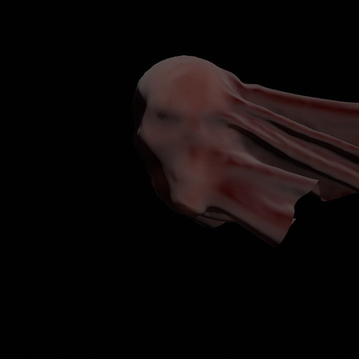
0.9 s in: released, the wind takes it.
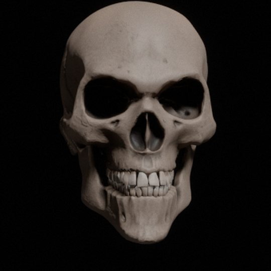
Waiting for the new veil's first surface and maps.
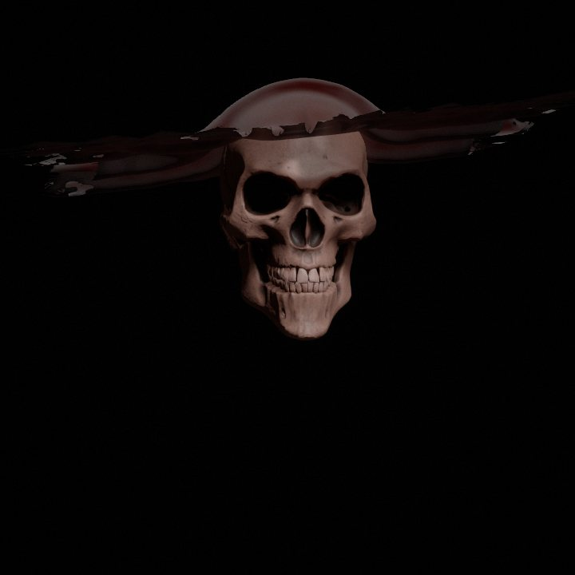
The new veil, flat, coming down on the crown.
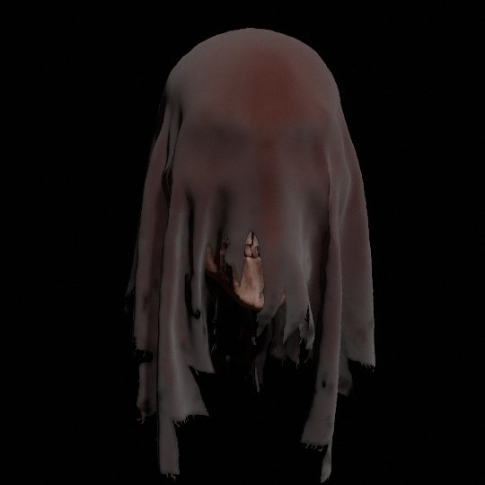
1.2 s later it hangs, and the leash tightens.
The sound is a room you cannot see. A wind bed loops under everything at a gain of 0.18 and rises to 0.48 with the wind: its level is 0.18 + 0.3·min(1, w), where w is the gust's strength over 5.5 m/s², or 1 while a veil is being blown away, eased with a 0.4 s time constant. Each gust and each blow-away also plays one of two gust samples, at 0.22 to 0.44 depending on its peak, panned up to ±0.4. Water drips at random somewhere in the dark every 1.5 to 6 s, one of six samples at 0.3 to 0.5, panned up to ±0.8, pitched 0.9 to 1.15, and a quarter of the time a second, quieter drop (0.2) falls from the same place 0.25 to 0.75 s later. Every 10 to 25 s (the first after 8 s) a chain drags in another room: one of two samples at 0.55 to 0.8, panned up to ±0.7.
Everything goes through a gentle low-pass at 1.6 kHz (Q 0.5), as if heard through the veil and the stone; the chains go through a second one at 1.1 kHz first, because they are further off. Every sample is levelled per kind in its file, so these gains set the balance: drips, chains and gusts about equally loud, the wind under them. Each play picks a variant never the same as the last of its kind and spreads it by ±6% of pitch and up to −20% of gain. All variation uses the unseeded generator, so sound never shifts the seeded look.
The audio context is created on load and resumed on the first gesture (pointerdown, touchend, click, keydown), but nothing plays until the first rendered frame calls sound.start(). Pausing suspends the context; M or the speaker button mutes it. The samples download as a loading step. A capture cannot play sound, so it is handed each sound as a cue (name, delay, gain, pan, rate, whether it is far) and the wind bed's level ten times a second, to build the soundtrack from.
A frame that sometimes makes a display refresh and sometimes misses it judders, and every jolt shows in the cloth. So frames go out on every Nth refresh. The refresh period is measured from the gaps between animation callbacks (between 2 and 50 ms, each counted at most as 1.5 periods, averaged at 5%), and N = round(1 / 120 / period), at most about 120 fps, plus a step-down. A drawn frame is late if more than N + 0.9 periods passed since the last; every 120 drawn frames, more than 30 late ones step N up by one (as long as that still gives 30 fps or more), and five clean windows in a row (fewer than 3 late) step it back down. The time of skipped callbacks is carried into the next drawn frame, capped at 0.1 s. ?fps= sets the most, ?fps=0 draws every refresh.
The page renders at most at a 1.5× pixel ratio, which a soft, dark scene does not show; only the page's own default is capped, so ?dpr= and the 2× screenshot keep theirs. The loading pill weighs its steps 1 for the studio, 3 for the skull, 1 for its fields, 1 for the sounds and 4 for compiling every program, the veil's near side included.
Shift+T records a take for videos: every detection (its capture time from the start, whether a face was found, the matrix and the eight blendshapes the skull uses, to four decimals) and cues for what happened around it: the look it started on, each veil change with the look it lands on and which way the old veil blew, each gust with its direction, peak, rise and fall, and each change of skull. Shift+T again downloads it as JSON. ?replay=take.json plays one back instead of the camera, looping 100 ms after its last detection, with auto change and random gusts off since the take brings its own; &replayStart= starts partway in, on the look the take had then, set before the first veil drops. The tracker's clock is then the take's, advanced by the page's time step, so a capture at its own virtual time reproduces it exactly; under ?capture it holds at the start until the recorder calls app.resumeTake().
Under ?capture the camera stays off, the frame cap is lifted, and the cloth is simulated on the page instead of in a worker, one update per frame with the same messages answered at once, because a capture renders slower than real time and a worker would run ahead of it. There, each frame's surface is that frame's, so nothing is drawn between surfaces.
?replay=take.json&replayStart=s plays one back. ?pose=jump shows raw detections, ?tracker=main detects on the main thread, ?fps= and ?dpr= lift the caps.